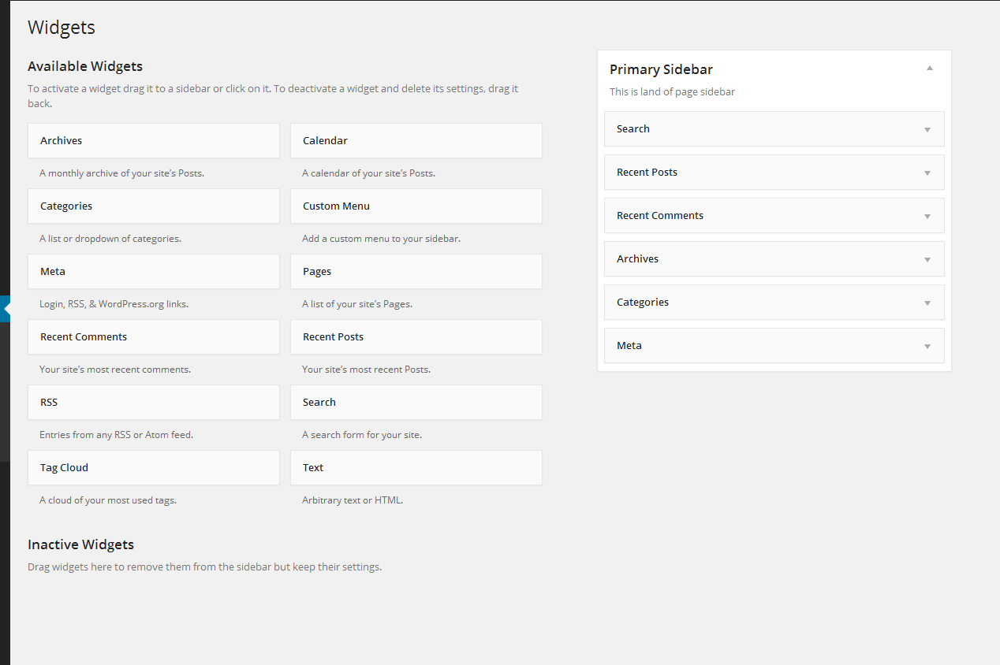

The sidebars is controlled via widgets. You can easily manage the widgets of the theme under Appearance > Widgets.
Drag & Drop your widgets into the corresponding Widget Area
You simply drap & drop the widgets into the spots you want. Drop the widget out of the box if you want to remove it.
For much more information on using widgets, see here